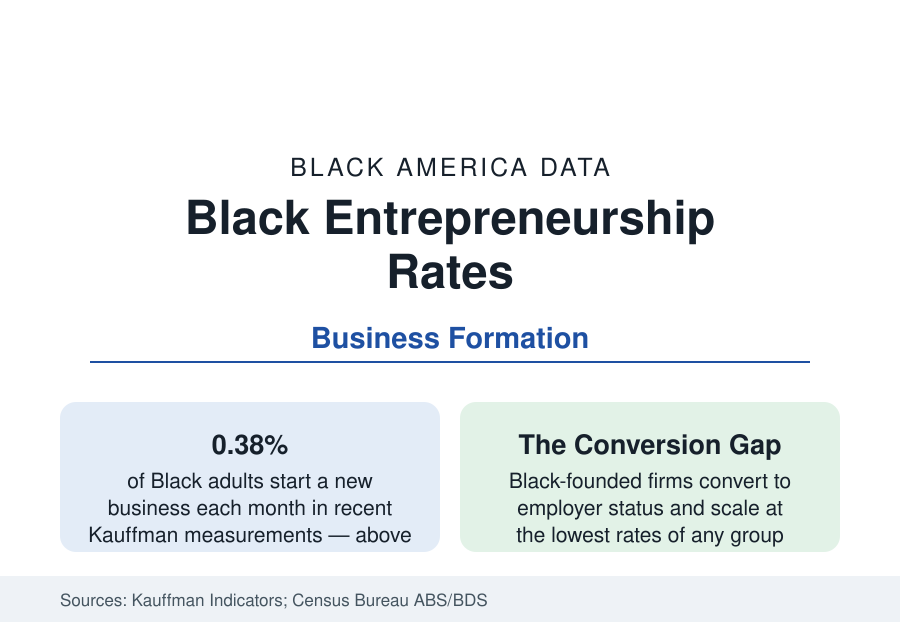

Black Business
Black Entrepreneurship: High Startup Rates, Hard Conversion
Black adults start new businesses at rates above the national average — then face the steepest drop-offs in survival, revenue, and employer conversion. The Kauffman and Census data.

Black adults start businesses at some of the highest rates in the American data — and convert those starts into surviving, scaling companies at the lowest. That two-part finding, consistent across the Kauffman Foundation's entrepreneurship indicators and the Census Bureau's business statistics, is the frame for the entire business section of this reference: the 161,000 employer firms and three million nonemployer firms of the overview article are the output of a formation engine that runs hot at the front and constricts at every subsequent stage. This article reports the startup-rate data.
The Formation Rate
The Kauffman rate of new entrepreneurs — the share of adults starting a business each month — has measured Black adults at or above the national average across most of the recent series, in recent years around 0.35 to 0.40 percent monthly against an all-adult rate near 0.30. The opportunity share of those starts — the fraction started from perceived opportunity rather than job loss or necessity — runs lower for Black founders than the national figure, the composition variable the literature uses to predict outcomes: necessity-weighted formation produces smaller, shorter-lived firms on average in every group's data. The pandemic-era application surge in the Census Bureau's Business Formation Statistics lifted all groups, with Black and women founders prominent in the retail and services categories that led it — the surge whose survival the subsequent years' data are now grading.
The Constriction: Survival, Revenue, Employer Status
Each successive stage narrows. Business survival data show Black-owned firms closing at higher rates through the early years than the national pattern — the five-year survival gap runs in the range of several percentage points in the longitudinal series — concentrated in the undercapitalized industries where Black formation clusters. Revenue distribution narrows further: the Annual Business Survey's receipts tables (detailed in the overview) show the median Black employer firm at a fraction of the national median receipts, and the share of Black firms reaching $1 million in revenue in the low single digits against a national share several times higher. Employer conversion is the narrowest gate: of the roughly three million Black-owned nonemployer firms, only about one in twenty operates with employees — the lowest conversion rate of the groups the Census tracks — which is why this reference separates the two universes in every business figure it quotes.
The Capital Explanation and Its Evidence
The financing data of the business section supply the mechanism with unusual consistency. Black founders start with less personal wealth (the net-worth data), receive full loan approval at roughly two-thirds the White rate in the Federal Reserve's survey, draw venture capital at about 1 percent of the total, and consequently start thinner — the Kauffman and Census startup-capital series show Black firms launching with roughly a third of the typical startup capital. The literature's finding is that the early outcome gaps (survival through the capital-hungry first years, hiring, reaching scale) track the capitalization gap more closely than any measured difference in the founders or their markets. The corollary programs — CDFI lending, MDI banking, supplier-diversity procurement, ecosystem accelerators — are the tracked interventions, each visible in the data at a scale the gaps dwarf.
The Countercurrent
The same data carry the section's most dynamic series. Black women's formation rates are the fastest-growing founder demographic in the survey record (the women-founders article); franchise ownership converts formation into a supported format at an 8 percent participation rate; e-commerce has lowered the retail entry cost that once gated Black retail formation; and the applications data of the pandemic era show formation energy concentrating in exactly the sectors — personal services, health, professional services, online retail — where the industry's Black ownership already clusters. The formation engine is not the problem the data describe. The constriction is.
Reading the Startup Data
Quote the two facts together, as the Kauffman series presents them: a Black adult is more likely than the average American to start a business this year, and the business started is, on average, the least capitalized in the economy. Everything in the business section — the industry mix, the revenue tables, the financing gaps, the bank count — is downstream of that pair of numbers.
More in Black Business
Black-Owned Businesses: Counts, Receipts, and the Representation Gap
About 161,000 Black-owned employer firms and three million solo ventures: how the Census Bureau counts Black business ownership, where firms concentrate, and the gap between population share and business share.
Black Median Net Worth: The Wealth Gap in Federal Reserve Data
The Federal Reserve puts Black median family net worth at $44,900, against $285,000 for White families — about 16 cents on the dollar. The widest gap in economic data.
Black Buying Power: The $1.8 Trillion Consumer Economy
Black buying power is estimated at about $1.8 trillion — larger than the economy of most nations. What the figure measures, who produces it, and what it buys.
Source: Kauffman Indicators of Entrepreneurship; U.S. Census Bureau, Annual Business Survey and Business Dynamics Statistics; Federal Reserve Small Business Credit Survey.